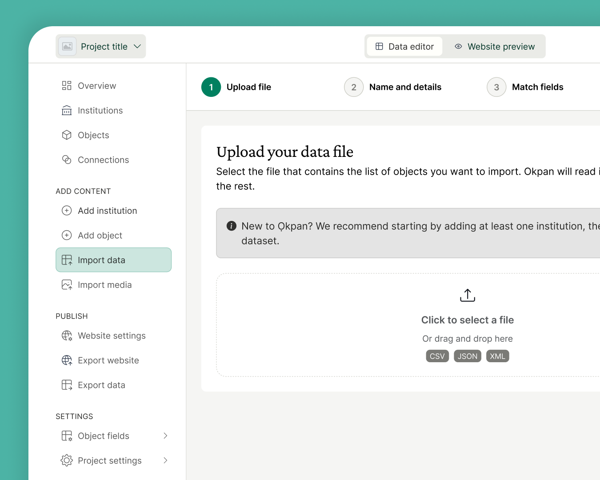

A tool for reconnecting dispersed collections
Ọkpan brings together records of artefacts scattered across museums worldwide, reconnecting them with the communities, knowledge, and histories they were separated from.
Open this website from your desktop device to start download it.
Ọkpan is available for Windows and Mac computers.
What is it?
Ọkpan is a platform for reconnecting dispersed collections. Import artefact records from any source, enrich them with situated knowledge such as Indigenous designations, oral histories, and cultural context, and publish a unified catalogue that brings a scattered collection back together, wherever the objects themselves remain.

Bring in artefact records from spreadsheets, JSON files, museum databases exports . Ọkpan adapts to the data you already have, however incomplete or inconsistent it is.
About the project
Vivamus eget consequat justo. Quisque hendrerit augue eu dignissim bibendum. Fusce ut est sed nibh bibendum auctor in et urna. Praesent et tincidunt elit.
Digital Benin
Digital Benin brings together all objects, historical photographs and rich documentation material from collections worldwide to provide a long-requested overview of the royal artefacts from Benin Kingdom looted in the late nineteenth century.
Go to the websiteLoupe
Loupe is a platform for provenance research. Structure an object's ownership history event by event, link each step to its supporting evidence, and visualize the full timeline, turning scattered archival research into a clear, shareable record.
Discover itContact us
Quisque lacus arcu, ornare eget porta id, lobortis a nulla. In tortor nisl, rhoncus sed efficitur sollicitudin, sagittis vel lacus. In quis porta neque. Ut id ante sed urna accumsan auctor. Nulla suscipit pellentesque nibh, id ultricies tortor porta quis. Vestibulum nec augue ut ex hendrerit feugiat. Phasellus ornare tortor a ullamcorper ultrices. Morbi id elementum est. Cras sodales mollis mi id vestibulum.
Integer varius eros nec pharetra tristique. Nam id dui neque. Sed varius eget urna vel dapibus. Vivamus posuere neque vel massa porta ultrices. Nunc eget ipsum at nisi eleifend rhoncus. Quisque facilisis felis vitae massa posuere, in imperdiet diam semper. Morbi vestibulum hendrerit augue ac congue. Vestibulum imperdiet nisl sed mattis commodo.
With the generous support of
Hosted by
In collaboration with